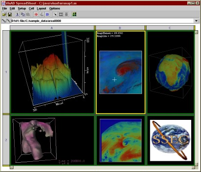
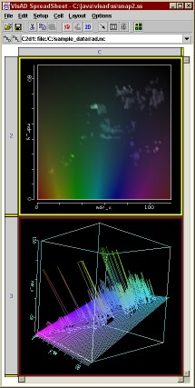
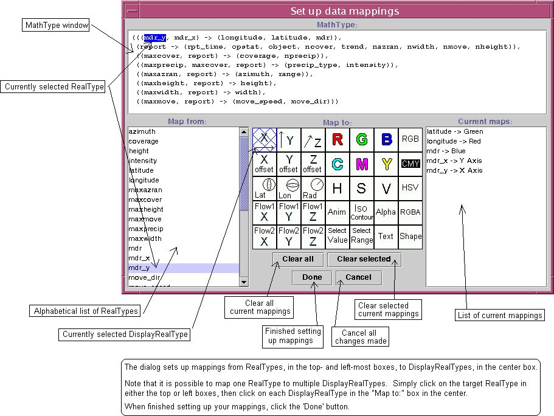
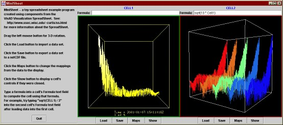

VisAD Visualization
SpreadSheet
Contents
Introduction
The VisAD
Visualization SpreadSheet is a program that utilizes VisAD to visualize data
sets and do simple computations, without forcing the user to do any Java
programming. It is a good example of how to build a user interface for a VisAD
application.
The SpreadSheet is made up of multiple spreadsheet cells,
much like "traditional" spreadsheet programs, except that each cell is capable
of displaying a data object (which can be read from a file or computed from
other cells). To visualize the data object, the SpreadSheet provides an easy and
flexible way to set up ScalarMaps, as well as a formula entry box, for
manipulating data from multiple spreadsheet cells.
Of course, the full
flexibility of VisAD is only accessible to programmers using the class library,
but the SpreadSheet is an easy way to visualize and compute with many data
formats, including ASCII, Bio-Rad PIC, BMP, DICOM, DODS, F2000, FITS, GIF,
HDF-5, HDF-EOS, JPEG, LUT, McIDAS, McIDAS ADDE, netCDF, PGM, PNG, QuickTime,
ROI, TIFF, Vis5D, and VisAD binary data files.
Here are some
screen-shots of the SpreadSheet in action (click for a larger picture):


Installation
To run the SpreadSheet, you must have JDK
1.2, available from Sun's JDK
1.2 web site. If you want 3-D displays, you'll also need Java3D 1.2.1, which
you can obtain from Sun's
Java3D web site.
You must also have VisAD installed. The VisAD home page has
detailed information about VisAD, including how to download and install VisAD.
One way to install VisAD is to download visad.jar, then
include the full path to your visad.jar file in your CLASSPATH environment
variable.
Running the
SpreadSheet
Getting
started
The SpreadSheet is packaged with VisAD. Once you have set
up your visad.jar file, and modified your CLASSPATH, you can run the SpreadSheet
by typing:
java -mx64m visad.ss.SpreadSheet
The '-mx64m' indicates for Java to
use up to 64 MB of memory as needed. The SpreadSheet itself can run without this
command flag, but the larger the data sets that you wish to import, the more
memory you'll need.
Importing
data
You can import data from a local file, a URL, or an RMI
address. To import data from a file, choose 'Import data' from the 'File' menu,
then select the data file that you want to import using the dialog box.
To import data from a URL, type the URL into the formula bar (the text
field next to the ADD and DEL buttons), then press ENTER.
Warning: VisAD does not yet support loading most file formats through
URLs, making the SpreadSheet unable to import these file types. Only loading of
GIF, JPEG and PNG files through URLs is supported now.
To import data from an RMI address, type the RMI address into the formula
bar with the syntax:
rmi://ip.address/ServName/CellData
where ip.address is the IP
address of the RMI server, ServName is the name of the server, and CellData is
the name of the remote data object to import (e.g., the first data object of
spreadsheet cell A1 would be "A1d1"). Local files can be loaded using the
formula bar as well.
In any case, the SpreadSheet will attempt to
identify what kind of data it is, then load it into the current cell. If the
data file is loaded successfully, the SpreadSheet will guess at mappings that
might work with the data set. If the SpreadSheet cannot determine mappings, or
you don't like the mappings that it chooses, you will have to assign them
manually.
Setting up mappings from
data to display
To manually edit a cell's mappings, choose 'Edit
mappings...' from the 'Display' menu.
Here is a screen-shot of the Edit
Mappings dialog box, and how to use it:

Using formulas
Sometimes it's nice to be able to compute a data object from other data
objects using a formula. To do this, first select the cell you'd like to assign
the formula to by clicking it, then click within the formula text field, type
your formula in terms of other data objects, and press enter. If the formula
computes successfully, a new data object will appear within the cell. Otherwise,
the cell will contain text listing the errors that occurred during the
evaluation.
For example, say you want to create a data object in cell B2
that is the average of data objects from cells A1 and B1. You could accomplish
this by highlighting cell B2, then typing:
(A1d1 + B1d1) / 2
in the formula text field, and pressing
enter. If the first data object from cell A1 ("A1d1") and the first data object
from cell B1 ("B1d1") have compatible data structures (MathTypes), then cell B2
will contain a data object (e.g., "B2d1") that represents their average.
Setting up the SpreadSheet as an RMI
server
If you run the SpreadSheet as an RMI server, then
SpreadSheets on other machines will be able to access your SpreadSheet's data
objects as RMI addresses. To run the SpreadSheet as an RMI server, launch the
SpreadSheet with the "-server" flag like:
java -mx64m visad.ss.SpreadSheet -server MyServer
where MyServer is
what you wish to name the server. Now other SpreadSheets can import your
SpreadSheet's data objects as explained in the Importing data
section.
Remote collaboration with
cloned SpreadSheets
A SpreadSheet can be constructed as a clone
of a SpreadSheet RMI server running on another machine. The cloned sheet will be
linked with the server, and changes to one will be reflected on the other. To
create a cloned SpreadSheet, launch the SpreadSheet with the "-client" flag
like:
java -mx64m visad.ss.SpreadSheet -client ip.address/ServName
where
ip.address is the IP address of the SpreadSheet RMI server and ServName is the
name of the server.
For more
information
See the README.ss file for more
detailed information about the SpreadSheet's features and how to use them.
Loading HDF-EOS and HDF-5 files
with the SpreadSheet
Logic to load HDF-EOS and HDF-5 files is
currently implemented in VisAD. However, the loaders must utilize native C code,
which is set up to compile on Sun Solaris or Irix machines only. Native HDF-5
code is available for several other platforms; see the JHI5 web site for more
information.
To compile the native code, you will need to take the
following steps:
1) Download the source code
version of VisAD from the VisAD FTP site.
2) Extract the jar file by
typing:
jar xvf visad_src-2.0.jar
3) Change your CLASSPATH environment
variable to include the parent directory of the visad directory (instead of the
visad.jar file). For example, if you have installed VisAD to /java/visad, then
type:
setenv CLASSPATH /java;.
4) Follow the directions in the
visad/data/hdfeos/README.hdfeos and visad/README files to install HDF-EOS and
HDF-5.
5) Set the required HDF-related variables (HDF_INC, HDF_LIB,
HDFEOS_INC and HDFEOS_LIB), to their respective include and library directories
of your HDF installations, if they are not set already.
6) Compile VisAD
by typing:
cd visad
make compile
The VisAD source files and all native code will be
compiled. Be patient; the compile can take a few minutes to run depending on
your machine. After the compile finishes successfully, you should be able to
load HDF-EOS and HDF-5 files using the VisAD SpreadSheet.
If you are
using Windows, you can enable HDF-5 support by installing the HDF-5 library and Java HDF5 Interface
according to NCSA's installation
instructions.
Sample data to
try with the SpreadSheet
Here is some interesting sample data to
try out with the SpreadSheet. All of these files are in the public domain.
b2rlc.nc
(130 KB) -- An interesting netCDF file with five time steps. Try mapping
wnum1 to X Axis, atmosphericRadiance to Y
Axis, and time to Z Axis, Animation, or
Select Value.
small.v5d
(518 KB) -- This small Vis5D file has three variables. Try mapping time
to Animation, row to X Axis, col to Y
Axis, lev to Z Axis, and U, V, and
W to Iso-contour. Then, use the contour controls to change the
values of U, V, and W.
rad.nc (133
KB) -- This netCDF file's default mappings are interesting, but also be sure to
try mapping mdr_x to X Axis, mdr_y to Y
Axis, longitude to Red, latitude to
Green, and mdr to Blue.
rosat.fits
(523 KB) -- Using the default mappings, change the hi value of the range of
value mapped to RGB to around 120, and the image will be much
clearer.
sphere.jpg
(5 KB) -- The default mappings will display this JPEG file fine, but you can
spice up the visualization by mapping ImageLine and
ImageElement to Latitude and Longitude instead of
X Axis and Y Axis, and perhaps even mapping Red,
Green, or Blue to Radius.
The MiniSheet example
The MiniSheet
program, found in the visad/examples directory of your VisAD source file
installation, provides a simple example of how to use the visad.ss classes in an
application. Of course, visad.ss.SpreadSheet itself provides a detailed and rich
example, but MiniSheet is much more approachable because of its simplicity (it
is less than 300 lines of code, much of which sets up the GUI).
Here is
a screenshot of the MiniSheet program (click for a larger picture):

Getting
help
If you need help using the SpreadSheet or have a question
about it, first check the README.ss file. If you
can't find an answer there, feel free to send e-mail to the VisAD mailing list.
To
subscribe to the VisAD mailing list, send e-mail to majordomo@ssec.wisc.edu with no
subject and
subscribe visad-list
as the first line in the message body.
To report a bug in the SpreadSheet, please send e-mail to the VisAD mailing list with a description
of the problem, and if possible, a list of steps to reproduce it. Keep in mind
that the SpreadSheet runs using VisAD functionality, which in turn takes
advantage of JDK 1.2, which runs on top of your operating system, so any bug you
find could be anywhere within this hierarchy. Note especially that if the
SpreadSheet fails to load a data file, chances are that the SpreadSheet is not
at fault, but rather the corresponding VisAD data form is not yet advanced
enough to handle that specific data file.
This page was last updated Wednesday, 27 March, 2002.
{kind=link}
{kind=link}